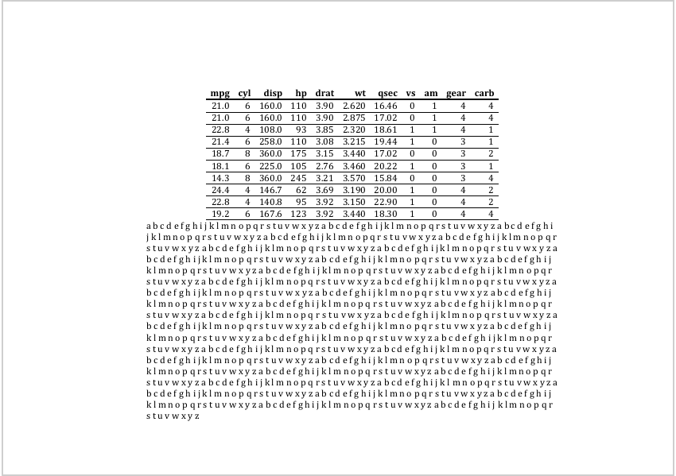

| body_set_default_section {officer} | R Documentation |
Define default section of the document. You can define section propeerties (page size, orientation, ...) with a prop_section object.
body_set_default_section(x, value)
x |
an rdocx object |
value |
a prop_section object |

Other functions for Word sections:
body_end_block_section(),
body_end_section_columns_landscape(),
body_end_section_columns(),
body_end_section_continuous(),
body_end_section_landscape(),
body_end_section_portrait()
default_sect_properties <- prop_section(
page_size = page_size(orient = "landscape"), type = "continuous",
page_margins = page_mar(bottom = .75, top = 1.5, right = 2, left = 2)
)
doc_1 <- read_docx()
doc_1 <- body_add_table(doc_1, value = mtcars[1:10,], style = "table_template")
doc_1 <- body_add_par(doc_1, value = paste(rep(letters, 40), collapse = " "))
doc_1 <- body_set_default_section(doc_1, default_sect_properties)
print(doc_1, target = tempfile(fileext = ".docx"))